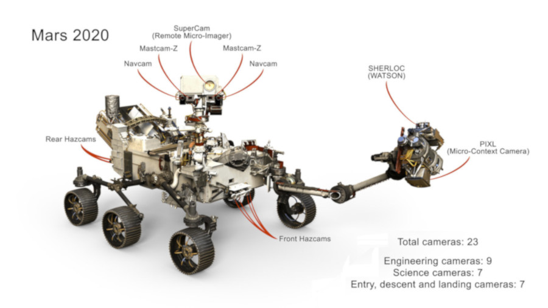

In our current technological period, robotics is the primary mechanism by which we can perform space exploration. This is because they are not as susceptible to the harsh environments of space as their human counterparts. We are able to send them to explore other planets through which they return data. This may involve simply orbiting the planet, and possibly landing on their surface. The most notable examples include the rovers, landers and orbiters which study Mars and its atmosphere.
The Mars Rovers are the major workhorse for modern-day Mars exploration. Not only do they provide data on the chemical composition of Mar's surface, they also return rather detailed images, allowing researchers to view the surface of the Red world. Initially, these images could only be viewed in black and white, but overtime, color images were produced allowing the first glimps on the surface of Mars. Coupled with six wheels and greater size and capability, these exploratory machines have given NASA much more depth of information compared to immobile devices.
The first Mars Rover, Sojourner, was named after the abolitionist and early womens rights activist Sojourner Truth. It landed on Mars in 1977 when it touched down in Ares Villis; thought to be an ancient flood plain on Mars. This would allow it to easily move around and explore the rocky surface while studying the chemical composition to signs of ancient water. In comparsion to current Rovers, Sojourner was very small. Its dimensions are of 66cm long, 48cm wide and 30cm tall. Despite this, like it modern counterparts, Sojourner had 6 wheels which worked independently so if one became stuck in mud, the remaining 5 could work to power the the Rover out. Its max speed was 0.015mph.
The exploration of Mars will continue with a series of similar, but much improved Mars rovers. The closest of which is the 'Mars2020 rover', a near twin of Curiosity but fitted with many improvements. It will explore an area known as 'Jezero Crater', where it will collect many samples that will eventually be picked up and brought back to Earth. The estimated launch date is July or August 2020, and is scheduled to arrive at Mars in 2021. The European space agency will also launch a rover known as 'ExoMars 2020/Franklin', named after the British scientist Rosalind Franklin. The Franklin rover will be fitted with a drill capable of penetrating 6 feet beneath the Martian surface. This will allow it to perform additional searches for signs of life on Mars.
Launched in 1997, the Cassini spacecraft was active for almost 20 years, and spent 13 of those years orbiting Saturn to study the planet and its system since its arrival in 2004. Through such study, Cassini has allowed us to explore worlds where methane rivers run and lead into methane-based seas. It has allowed researchers to explore worlds where jets of ice and gas propel material into space from a liquid ocean that may be capable of supporting life. Cassini carried the Huygens probe to Saturn. However, after so many years of service, Cassini exhauted its fuel supply, and in order to protect the icy moons of Saturn from contamination as its possible they support life, Cassini was instructed to dive into the atmosphere of Saturn and return as much data as possible before being destroyed.
The exploration is space is primarily manned by robotic spacecraft. There is an increasinly wider breadth of machinary that is being set into the depths of space. In fact, the Voyager 1 spacecraft is the furthest object that humanity has launched. However, Voyager 1s declining power supply means it will stop transmitting data by 2025, and so information will be recieved from that distant location. Launched in 1977, Voyager 1s power supply is only 470 watts. Other robotic spacecraft such as Galileo have allowed us to study Jupiter, its system and therefore its moons. As technology continues to advance, manned missions to distant planets will become easier, but in our current time of technological progress, robotic spacecraft lead the way.